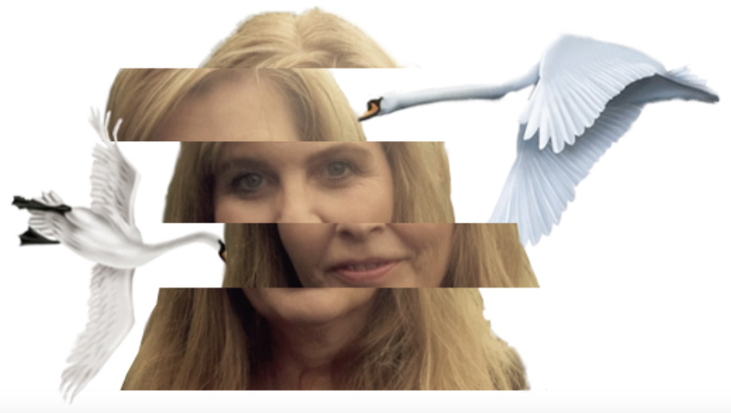

OM
Forfatter og mediebranchen
Jeg er uden tvivl alderspræsidenten på KEA 1.semester 2018!
Det sætter mig selvsagt lidt tilbage i forhold til de digitale medier, da jeg er vokset op uden mobil, internet og hele den verden, de unge idag bevæger sig fuldstændig naturligt rundt i. Til gengæld er jeg qua årelang erfaring vældig bevendt i alt, hvad der handler om content. Både det visuelle, det fortællemæssige og det tekstmæssige.
Jeg har lavet TV (og radio) siden jeg var 20 år. Først som kulturjournalist på dengang nyopståede lokalradioer, og kort efter som studievært på DR, dengang der kun var en kanal og vi sendte live torsdag aften for 2.3 millioner mennesker. (akke ja, det var tider)
Derefter er det gået slag i slag.
Jeg har været så svineheldig, at jeg altid har lavet noget, jeg gerne ville - og som altid har været multi spændende. Som journalist, forfatter, instruktør, content developer, redaktionschef, udviklingschef, postproducer og endda forlagsredaktør (der nok må siges, at være den eneste nitte, jeg har trukket - for det var et ønskejob i en branche, der slet ikke matchede mit temperament.)
KEA er for mig en nøje planlagt overbygning til, hvad jeg allerede kan. En udvidet forståelse for, hvad der sker bag skærmen(e), så jeg er bedre klædt på til fremtidens medier og min rolle i disse. At der så har vist sig, at være bonus på øget indsigt i struktureret arbejdsgang, gode brugertestøvelser OG -ikke mindst - design tips og vejledning, har gjort dette halve år til guld for mine planer.
Cecilie Olrik
